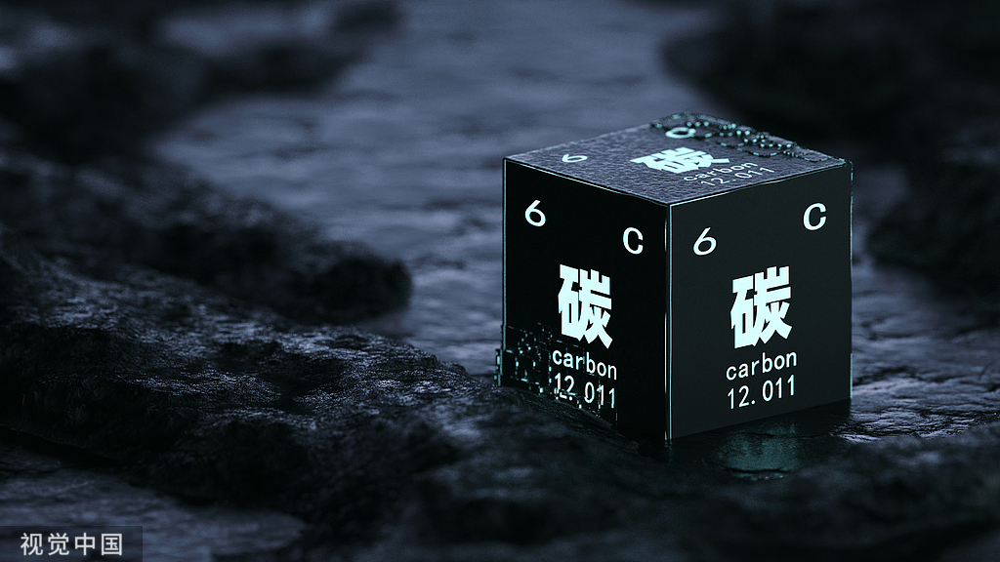
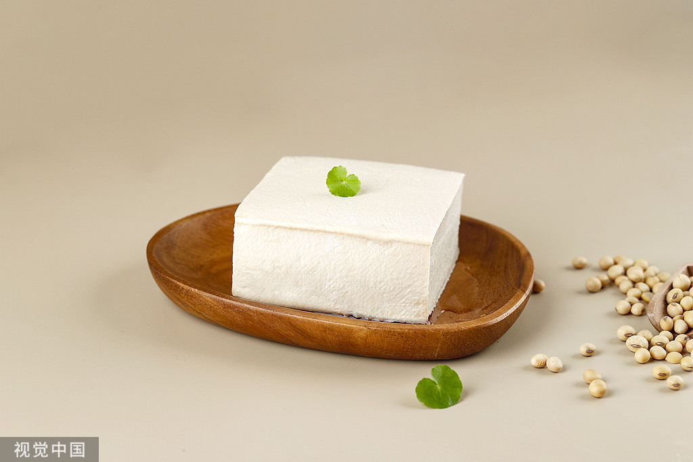
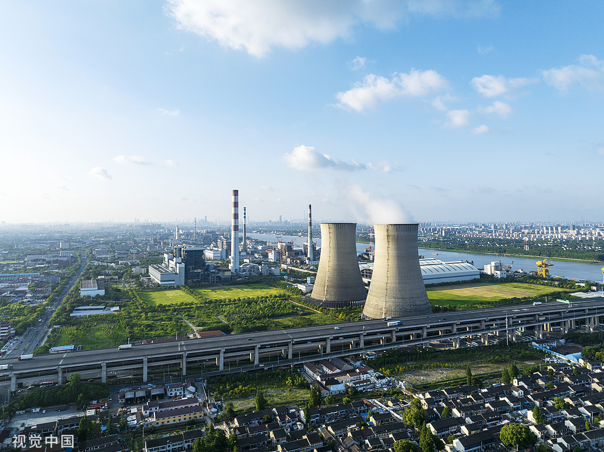
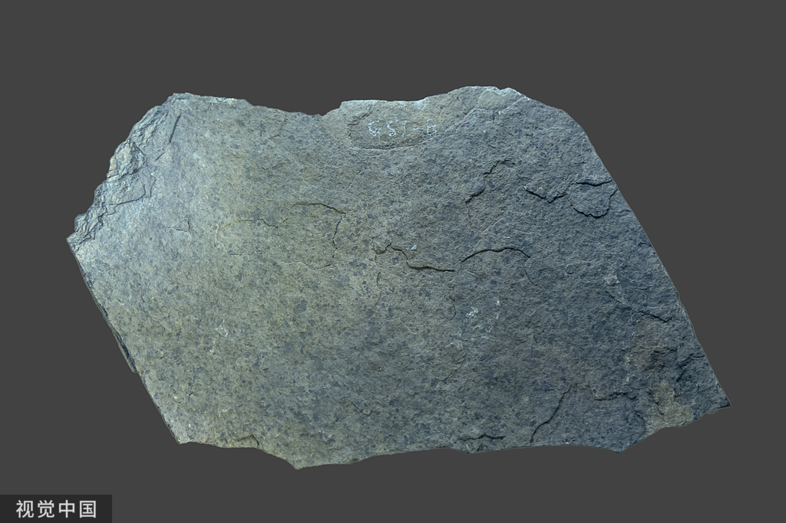
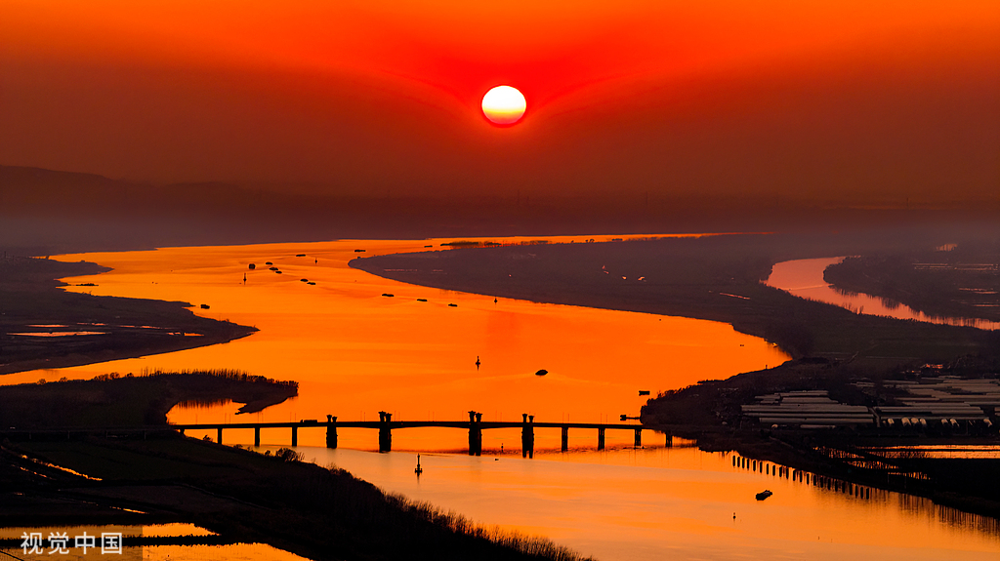

Black, which means coal.Huainan boasts one of the largest coal reserves in China, with deposits that are not only vast but also high in quality. The coal here is characterized by its low ash and sulfur content, making it highly sought after for both domestic use and export. The city's coalfields stretch over a wide area, providing a reliable source of energy that has fueled industrial growth and economic development for decades.

White,which means tofu.Huainan is the birthplace of delicious tofu. As for the origin of tofu, there is also a quite mythological story: "一人得道，鸡犬升天" It is said that Huainan King Liu An was very obsessed with the alchemy of immortality, in a process of refining accidentally refined tofu this "unilateral", in Huai Nan Wang Liu An after eating it flew to become immortal, some poultry after eating, also have the ability to live forever.

Red, for thermal power generation.With the development of the coal industry, Huainan's thermal power generation is also not outdone, in its territory there are Tianjian, Luohe, Pingwei, Fengtai, Tianji five main thermal power plants, and Huainan's newly mounted thermal power units total capacity has reached 10 million kilowatts, a total of 46 billion kilowatt-hours of power generation, accounting for more than 85% of the total installed capacity of "Anhui power east transmission". It is a well-deserved "leading force" of "Anhui electric power to the east" and can be called "fire Three Gorges".

Blue,Representing the origin of life.Bagong Mountain Scenic spot in Huainan many local people called geopark, here not only has a rare stone forest landscape in northern Anhui, Huainan insect fossil site discovery is internationally renowned, Bagong Mountain is also known as the origin of life on the blue planet

Green,representing an ecologically sound place to live.The lake and the mountains reflect each other, and the mountain, the water and the city are integrated into a unique urban style.